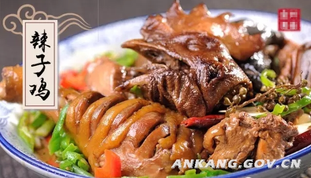
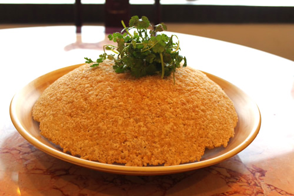
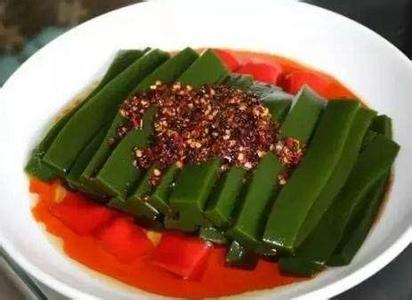
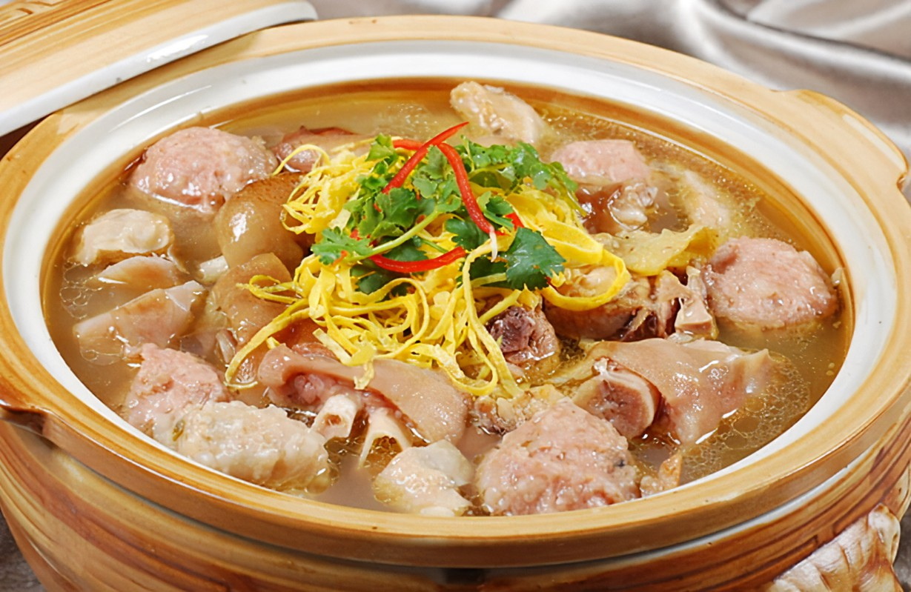
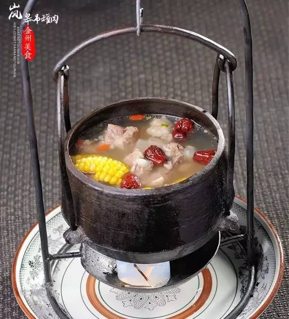
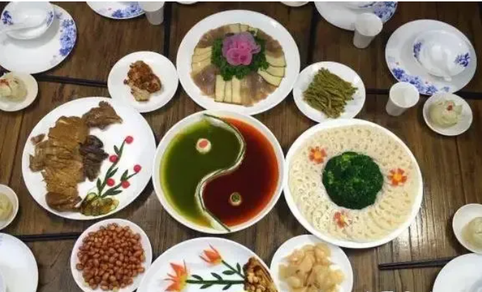
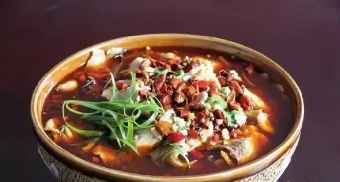

安康饮食文化
安康的饮食与关中、陕北地区截然不同，源于安康特殊的地域，尤其是历史上的移民活动，使得这里与周围多元文化交汇，饮食文化也经过漫长的侵润。
这里南甜北咸、东酸西辣的口味样样都有，“粤、川、鲁、苏”四大菜系俱全，品种繁多的民间风味小吃更是安康饮食一绝。
岚皋辣子鸡
在安康岚皋县，一钵岚皋辣子鸡通常要配上一碟刚刚出锅的锅巴，把锅巴置于汤汁中浸泡片刻即可入口。土鸡的鲜美、锅巴的香脆不言而喻，相得益彰。而其中最为绝妙滋味就妙在“辣”味上。经过鸡肉鲜味的渲染，这种辣味恰到好处，多一分则难受，少一分则不够。
 神仙豆腐
神仙豆腐是用当地特色植物“六道木"（俗称“神仙树”）的叶子制作而成。用它做成的凉粉、豆腐既可凉调，也可煮、炒；凉吃时，可调辣椒、花椒油、盐、醋等调味品，吃起来柔滑、凉爽可口。可以有“冷火”的感觉。
紫阳蒸盆子
在紫阳，品味老街的同时，还要品味紫阳独有的美食，这美食叫做紫阳蒸盆子。紫阳蒸盆子，从鸡肉、猪蹄的选材，再到火候的掌控，都有着极其严格的要求，从形式上看，这是一盆烩菜，但了解它的烹制工艺，品尝过它的美味之后，就不得不说，这岂止是一盆烩菜那样简单。
岚皋吊罐肉
在岚皋民间，至今仍沿袭着古代巴人烹制美食的工具--吊罐，用吊罐烹制的各种肉类统称为吊罐肉。吊罐肉在食材的选择上非常讲究，通常只用自家生产的牛羊肉、“跑山猪”和林下土鸡，配以大山深处野生的川穹、鹿含草、细辛、广三七等佐料，再搭配一些干洋芋果果、干竹笋等山货。在岚皋本地，吊罐肉和摔碗酒是密不可分的绝配。吃着鲜香美味的吊罐肉，喝着豪气满满的摔碗酒，不仅让人对古老的巴人生活悠然神往，流连忘返。
紫阳三转弯
“三转弯”指的是筵席上菜顺序要求是三次上菜程序，分别称 为“一转弯” “二转弯” “三转弯” 。“一转弯”指铺席环节，摆上点心、押席菜、凉菜、烩 盘，使用大圆桌或大方桌均可，按照 8-12 人摆上餐具。“二转弯”指上主热菜，竞争饮酒环节。 “三转弯”指上下饭菜（俗称坐碗子） 、吃主食、涮火 锅环节。三转弯”筵席有独特的格式和必须的菜点，铺席和上菜有固定的顺序规定，有特色的命名，充分体现了紫阳人热情、大方、 礼仪周到之传统。
鲶鱼炖豆腐
这道菜精心选用汉江上等鲶鱼和新鲜的嫩豆腐炖制而成，汉江鲶鱼含有丰富的蛋白质和矿物质营养元素，具有补中气、滋阴、开胃等功效。豆腐同样是蛋白质丰富的食品，更含有人体必需的八种氨基酸，有降低血脂、保护血管细胞和预防心血管疾病等作用，因此鲶鱼炖豆腐是一道营养价值极高且色香味俱全的美味菜肴。
